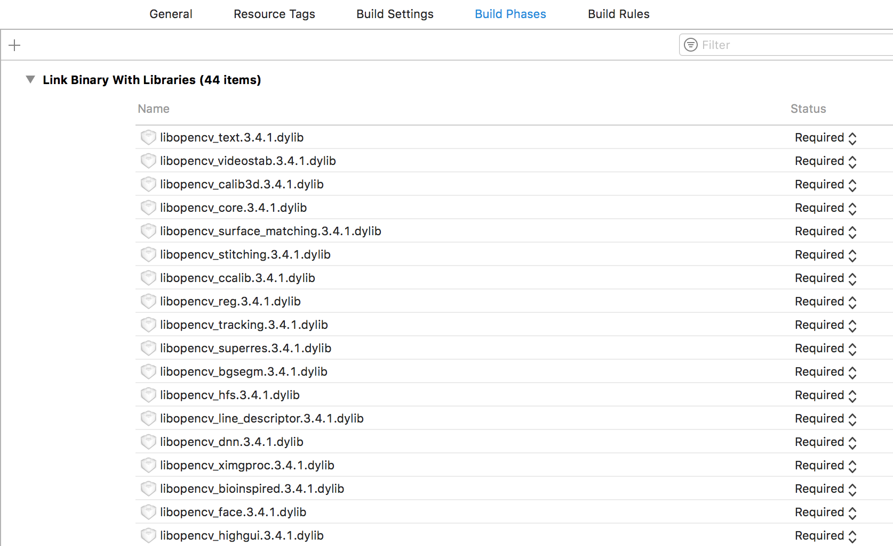
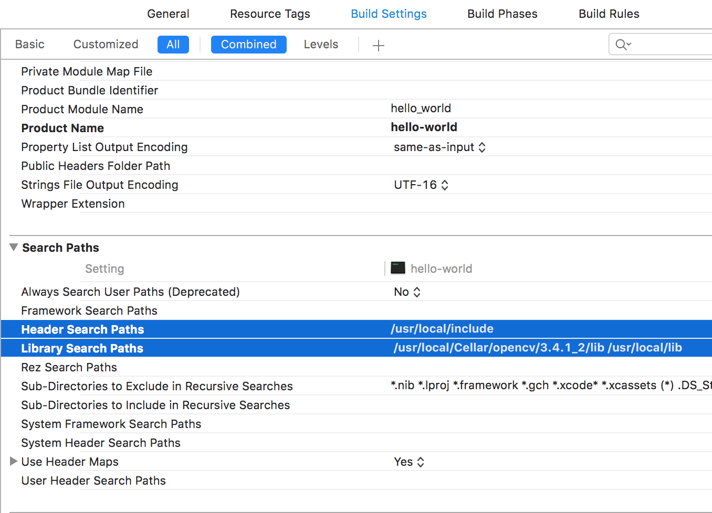

painterdrown Blog - painterdrown CV
⏰ 2018-03-27 00:18:00
👨🏻💻 painterdrown
今晚实验室老师开会，说打算开始带我和另外一位同学做 CV 以及神经网络。为了更系统地学习和记忆，接下来我打以博客的形式记录下学习过程及心得等等。
师兄提到玩计算机视觉必定要碰 OpenCV，所以这里讲一下我的安装过程。
由于我用的是 macOS，比较方便的做法是：Xcode + OpenCV 的环境。
使用 brew 安装：brew install opencv
安装完之后，可以看到以下目录及文件：
Xcode 新建命令行程序项目，在工程文件下进行以下设置：


配置完毕，在 cpp 文件直接：#include "opencv2/opencv.hpp"，测试代码：
#include "opencv2/opencv.hpp"
using namespace cv;
int main(int argc, const char * argv[]) {
Mat image;
image = imread("test.jpeg"); // 这里换成图片的绝对路径
namedWindow("Hello OpenCV!", WINDOW_AUTOSIZE);
imshow("Hello OpenCV!", image);
waitKey(0);
return 0;
}
如果需要部署 python 环境，就通过 ln -s 来把 cs2.so 文件（在 opencv 安装目录找到）软连接到 python 的 packages 目录下，这里不赘述。
最近在看《OpenCV 3 计算机视觉 Python 语言实现》，里面需要搭 OpenCV + Python 的环境，此外要需要引入外部模块 contrib。为了满足这些条件，这次是用源码编译安装的。
git clone https://github.com/opencv/opencv.git
git clone https://github.com/opencv/opencv_contrib.git
cd opencv
mkdir build
cd build
cmake -D CMAKE_BUILD_TYPE=RELEASE \
-D CMAKE_INSTALL_PREFIX=/usr/local \
-D PYTHON2_PACKAGES_PATH=/usr/local/lib/python2.7/site-packages \
-D OPENCV_EXTRA_MODULES_PATH=../../opencv_contrib/modules ..
make -j4
sudo make install